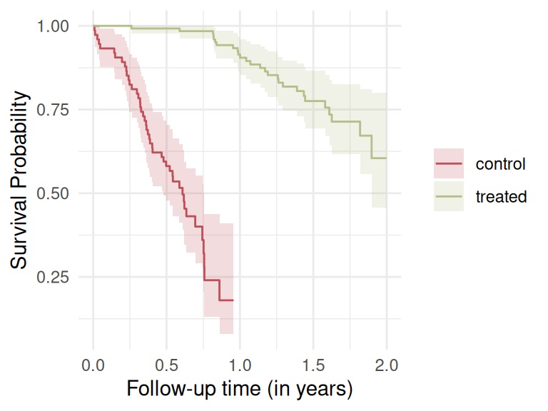

flowchart LR A(Cohort entry) --> B(Prescription filled) B --> C(Treatment group) A --> D(Control group) C --> E[Event] D --> E[Event]
Because I could not stop for Death,
He kindly stopped for me;
The carriage held but just ourselves
And Immortality. —Emily Dickinson
Survival analysis is an important topic in medical statistics. Its most prominent method is the estimator developed by E. L. Kaplan and Paul Meier, and we will use the Kaplan–Meier estimator in the example at the end of this post.
The underlying assumption of survival analysis is a little bit sinister: we will all eventually experience death. However, for some of us, this event has not yet occurred, but it will happen in the future.
It reminds me to stay humble in medical data analysis. Being the person in charge of the data analysis does not place me outside the realities it describes. At the end of the day, we are all patients.
Anyway—there is a problem in survival analysis that has always fascinated me, and it takes us in a slightly unexpected direction: immortality. It is interesting that patients can become immortal in data analysis. This artifact is known as immortal time bias.
In 2001, a study published in Annals of Internal Medicine claimed that Oscar winners lived almost 4 years longer than actors who were never nominated [1]. The study suffered from immortal time bias: in order to become an Oscar winner, one must survive long enough to actually win the Oscar. In the most extreme case, it was 79 years. The Oscar winners who were selected based on the fact that they had won an Oscar were not allowed to die; they were all immortal until they won. A critical discussion and reanalysis of the study was performed by Sylvestre [2], which is worth reading.
The reanalysis showed no evidence for a survival advantage of the Oscar winners.
What is immortal time bias?
Immortal time bias occurs when survival beyond a certain time point is required in order to receive a treatment [3]. A textbook example is a study in which patients are assigned to the treatment group only if they fill a prescription for a corticosteroid within 90 days after hospital discharge (for example). To be classified as treated, patients must necessarily survive until the prescription is filled; this period is therefore immortal time.
The bias works in the direction that the treatment group will always appear to have better survival, even if the treatment has no true effect. This apparent benefit is not due to the medical intervention but is instead an artefact of a flawed study design. To avoid immortal time bias, patients must be assigned to treatment groups at time zero, or treatment must be modeled as a time-dependent exposure.
One of the earliest documented examples of immortal time bias was by Gail in 1972 in a study of heart transplantation [4]. But it keeps popping up still today.
A recent example from cancer research
Recently, a LinkedIn post by Kaspar Rufibach caught my attention, pointing out suspected immortal time bias in a study published in Nature [5]. The study showed that in patients with advanced cancers (including non-small-cell lung cancer and metastatic melanoma), those who received an mRNA COVID-19 vaccine within 100 days of starting ICI treatment had substantially better overall survival.
In this paper, patients were classified as vaccinated only if they received a COVID-19 mRNA vaccine within a certain window after starting immune checkpoint inhibitor (ICI) therapy. Thus, this study could potentially suffer from immortal time bias, and it’s a very reasonable concern. To be counted as vaccinated, a patient must survive long enough after ICI initiation and remain well enough to receive vaccination.
This creates a period between ICI start (time zero) and vaccination during which death cannot occur for those later labeled “vaccinated,” but can occur for those labeled “unvaccinated.”
That period is, by definition, immortal time.
Immortal time sneaks in when we forget that survival is not just about living longer, but about measuring it correctly. So, whether we are analyzing heart transplants, cancer treatments, or the longevity of Oscar winners, we must assess survival correctly.
And leave true immortality to poetry.
The title of this post is a song by Pearl Jam. The preview image of this post is a photo by Jeremy Perkins on Unsplash.
Just one more thing
I simulated a simple dataset to illustrate immortal time bias using an intentionally extreme setup to make the concept clear. The dataset included 100 patients. Treatment was a time-dependent exposure, but it is incorrectly coded as a baseline indicator based on future information, specifically, whether a patient survived long enough to initiate treatment. This misclassification introduces immortal time, which in turn produces immortal time bias when treatment is analyzed as a baseline exposure.
Key parameters of simulation:
- Patients: 200
- Survival: exponential distribution, median was 2 years
- Treatment timing: beta distribution skewed toward later treatment, max. was 1 year
- Treatment indicator: defined at baseline using future survival, which created immortal time
- Censoring: uniform administrative censoring
Code
library(survival)
library(ggsurvfit)
set.seed(2026)
n = 200
a = 2 # median survival time
b = 1 # max. time until treatment
# True survival
lambda = log(2) / a
surv_time = rexp(n, rate = lambda)
# Treatment timing
treat_time = 0.05 + rbeta(n, 5, 2) * b
# Administrative censoring
censor_time = runif(n, 0.5, 2)
# Observed data
time = pmin(surv_time, censor_time)
status = as.integer(surv_time <= censor_time)
# Immortal-time-biased treatment indicator
treated = rep("control", n)
treated[treat_time < time] = "treated"
treated = as.factor(treated)
data = data.frame(
time = time,
status = status,
treated = treated
)I then fitted a Kaplan-Meier survival curve for the treatment and control group.
Code
# Kaplan-Meier
fit = survfit2(Surv(time, status) ~ treated, data = data)
COLORS = c("#BF505A", "#D9A282", "#818C70", "#B4BF8A")
# Plot
ggsurvfit(fit) +
labs(x = "Follow-up time (in years)",
y = "Survival Probability") +
add_confidence_interval() +
scale_color_manual(values = COLORS[c(1, 4)]) +
scale_fill_manual(values = COLORS[c(1, 4)]) +
theme_minimal()
The analysis suggested longer survival in the treatment group, not because treatment was effective, but because some individuals were immortal by design.
So what?
This simulation showed that if you ignore the timing of treatment, it can look like a therapy works even when it doesn’t. Careful study design and analysis are needed to avoid being misled by immortal time bias.
References
1.
Redelmeier DA, Singh SM. Survival in academy award-winning actors and actresses. Ann Intern Med. 2001;134: 955–962. doi:10.7326/0003-4819-134-10-200105150-00009
2.
Sylvestre M-P, Huszti E, Hanley JA. Do OSCAR winners live longer than less successful peers? A reanalysis of the evidence. Ann Intern Med. 2006;145: 361–3; discussion 392. doi:10.7326/0003-4819-145-5-200609050-00009
3.
Lee H, Nunan D. Immortal time bias. Catalogue of bias. 2020. Available: https://catalogofbias.org/biases/immortal-time-bias/
4.
Gail MH. Does cardiac transplantation prolong life? A reassessment. Ann Intern Med. 1972;76: 815–817. doi:10.7326/0003-4819-76-5-815
5.
Grippin AJ, Marconi C, Copling S, Li N, Braun C, Woody C, et al. SARS-CoV-2 mRNA vaccines sensitize tumours to immune checkpoint blockade. Nature. 2025;647: 488–497. doi:10.1038/s41586-025-09655-y
Citation
BibTeX citation:
@misc{schwab2026,
author = {Schwab, Simon},
title = {Immortality},
date = {2026},
url = {https://www.statsyup.org/posts/immortality/},
langid = {en}
}
For attribution, please cite this work as:
Schwab S. Immortality. 2026. Available: https://www.statsyup.org/posts/immortality/